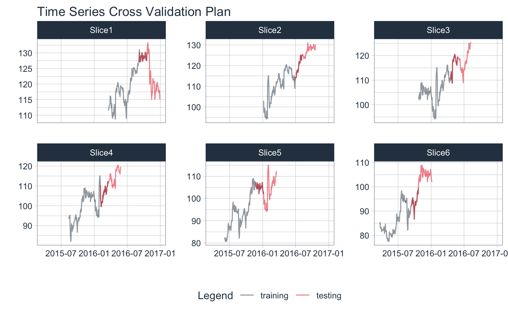

R/plot-time_series_cv_plan.R
plot_time_series_cv_plan.RdThe plot_time_series_cv_plan() function provides a visualization
for a time series resample specification (rset) of either rolling_origin
or time_series_cv class.
plot_time_series_cv_plan( .rset, .date_var, .value, ..., .smooth = FALSE, .title = "Time Series Cross Validation Plan" )
| .rset | A time series resample specification of of either |
|---|---|
| .date_var | A column containing either date or date-time values |
| .value | A column containing numeric values |
| ... | Additional parameters passed to |
| .smooth | Logical - Whether or not to include a trendline smoother.
Uses See |
| .title | Title for the plot |
Resample Set
A resample set is an output of the timetk::time_series_cv() function or the
rsample::rolling_origin() function.
time_series_cv() and rsample::rolling_origin() - Functions used to create
time series resample specfications.
plot_time_series_cv_plan() - The plotting function used for visualizing the
time series resample plan.
library(tidyverse) library(tidyquant) library(rsample) library(timetk) FB_tbl <- FANG %>% filter(symbol == "FB") %>% select(symbol, date, adjusted) resample_spec <- time_series_cv( FB_tbl, initial = 150, assess = 50, skip = 50, cumulative = FALSE, lag = 30, slice_limit = 6 ) resample_spec %>% tk_time_series_cv_plan()#> # A tibble: 1,380 x 5 #> id key symbol date adjusted #> <chr> <fct> <chr> <date> <dbl> #> 1 Slice1 training FB 2015-10-23 102. #> 2 Slice1 training FB 2015-10-26 104. #> 3 Slice1 training FB 2015-10-27 104. #> 4 Slice1 training FB 2015-10-28 104. #> 5 Slice1 training FB 2015-10-29 105. #> 6 Slice1 training FB 2015-10-30 102. #> 7 Slice1 training FB 2015-11-02 103. #> 8 Slice1 training FB 2015-11-03 103. #> 9 Slice1 training FB 2015-11-04 104. #> 10 Slice1 training FB 2015-11-05 109. #> # … with 1,370 more rowsresample_spec %>% plot_time_series_cv_plan( date, adjusted, # date variable and value variable # Additional arguments passed to plot_time_series(), .facet_ncol = 3, .line_alpha = 0.5, .interactive = FALSE )